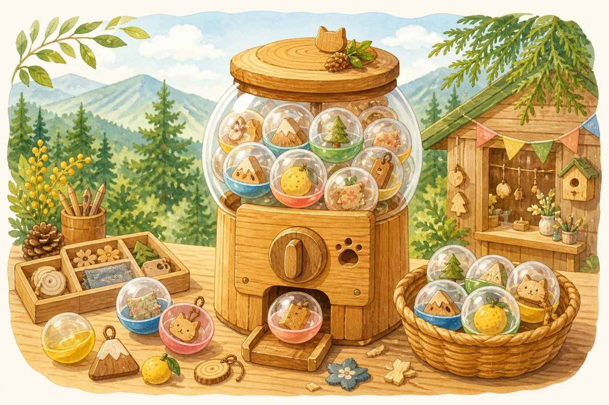
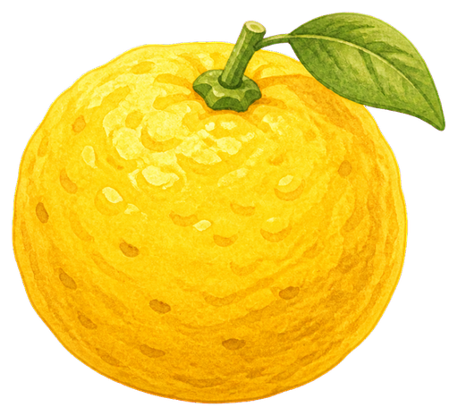
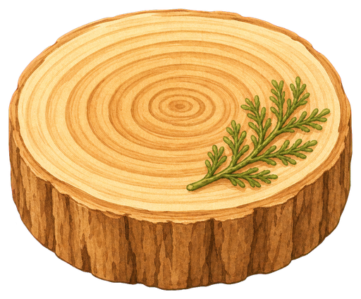
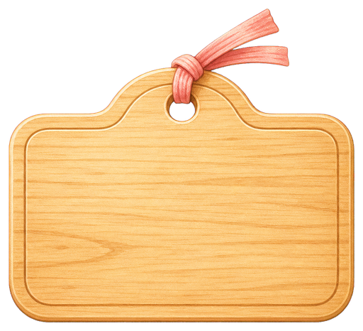
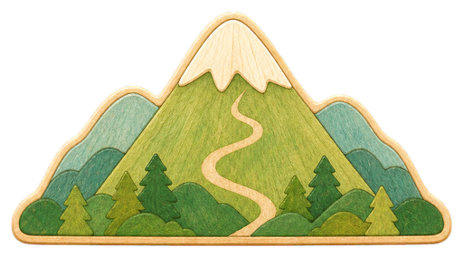
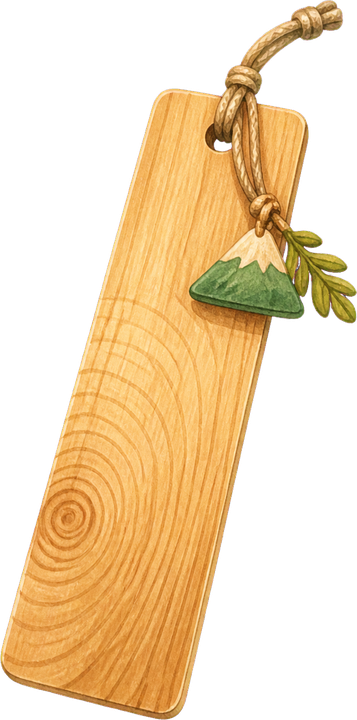
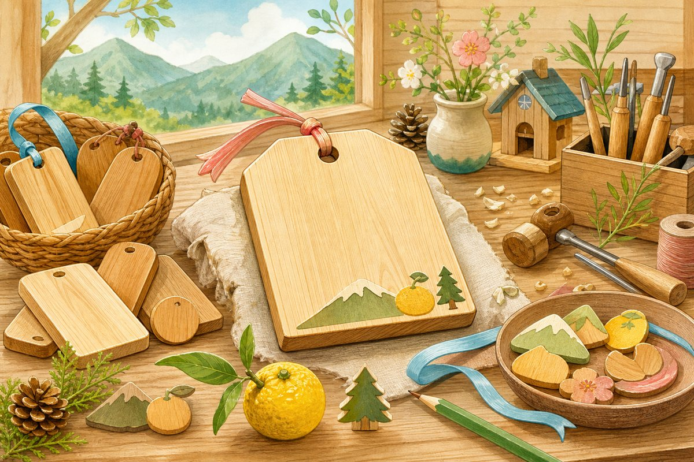
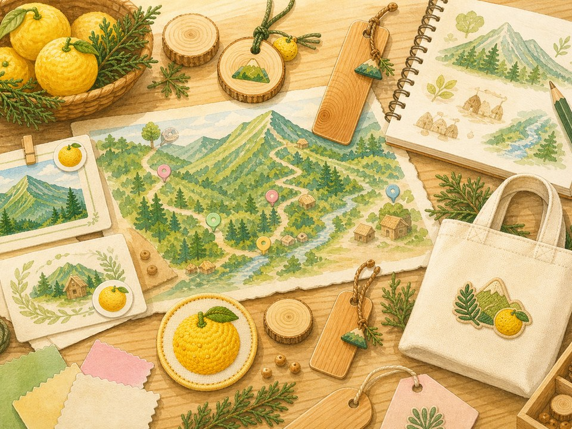

木のグッズ
木頭杉を使ったキーホルダー、コースター、バッジ、しおりなどを小ロットで作ります。
KITO SUGI / OKUYARIDO / HANDMADE
木頭杉や山の家まわりの物語を、キーホルダー、しおり、参加証、記念品などの小さなグッズにして届けます。


ただのおみやげではなく、そこへ行ったこと、そこで出会ったこと、好きな場所を少し支えたい気持ちまで持ち帰れるものを作ります。

Craft Gacha

何を作るか迷ったら、素材・形・場面をひとつずつ引いてみる。小さなグッズの種が、ぽんっと出てきます。

ゆず
木
木札
山
Try It

14文字まで。実際の制作を想像するための小さな遊びです。
木の香りがしそうな木札ができました。
What I Make
木頭杉を使ったキーホルダー、コースター、バッジ、しおりなどを小ロットで作ります。
イベント用の参加証、謎解きキット、記念品など、体験のあとに残る小物を作ります。
キャップ、バッグ、Tシャツなどに、刺しゅうや小さなワンポイントを入れた布小物を作ります。
Works

About
大量生産ではなく、必要な分だけ、ひとつずつ。山の家、イベント、旅の思い出にそっと残るものづくりを目指しています。